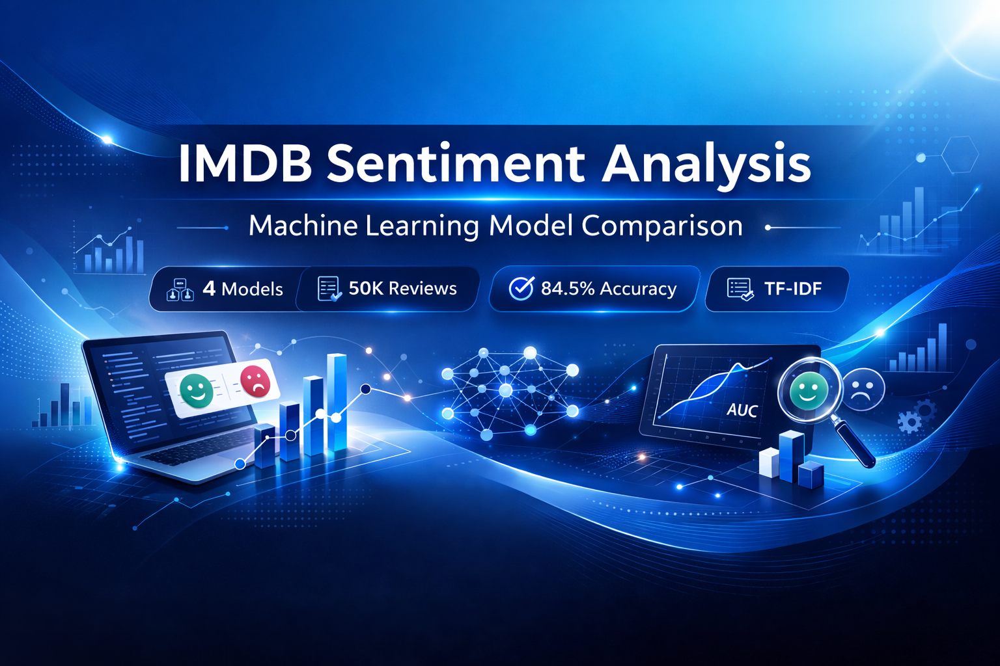
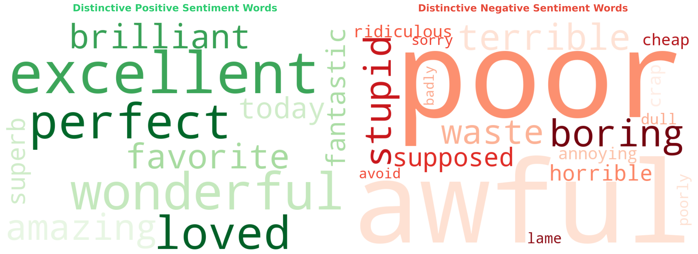
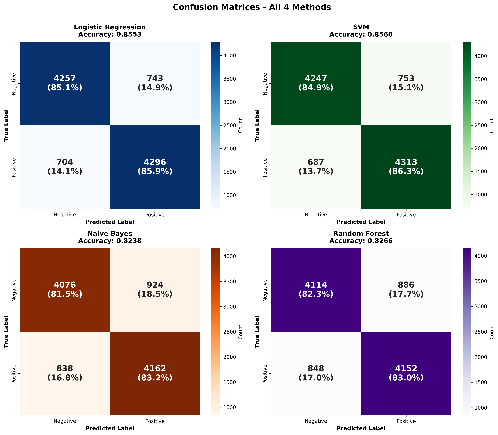
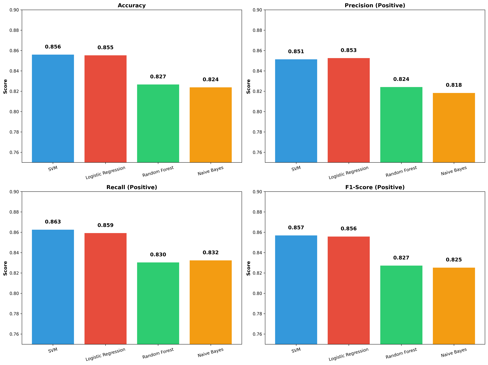
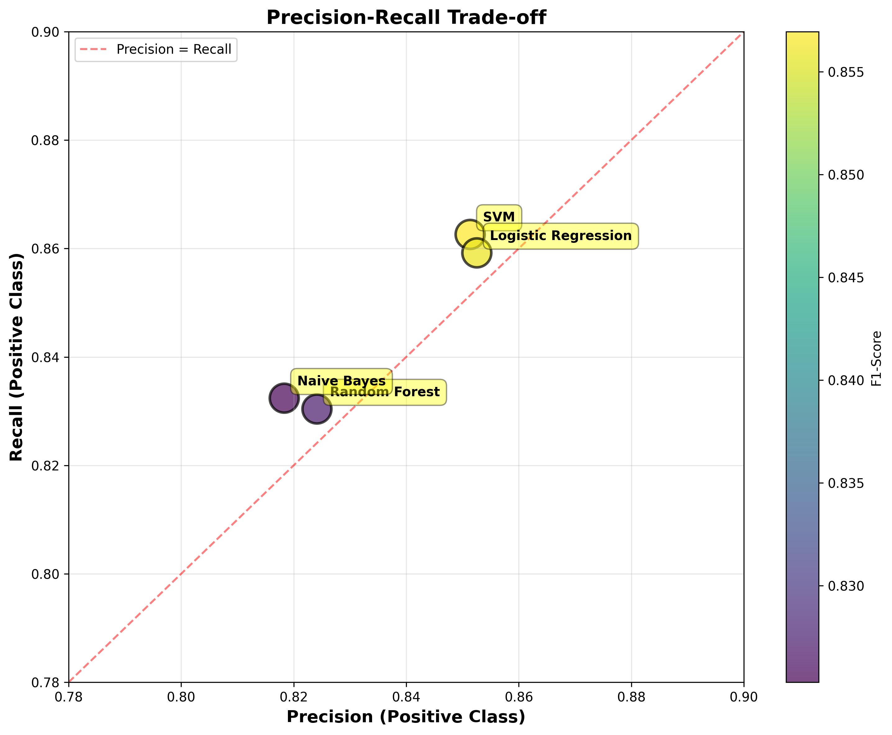
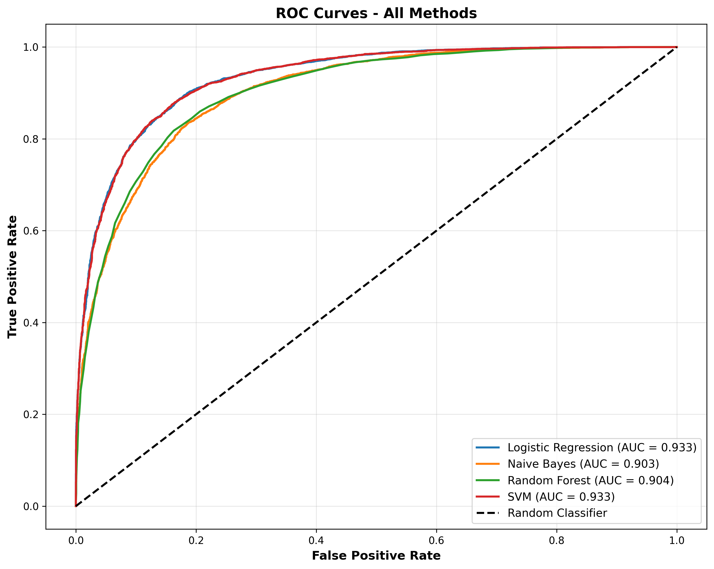

Logistic Regression vs Naive Bayes vs Random Forest vs SVM

Sentiment analysis is one of the most common real-world applications of Natural Language Processing (NLP). From product reviews to social media posts, understanding how people feel about something can drive better decisions.
In this project, I built and compared four popular machine learning models — Logistic Regression, Naive Bayes, Random Forest, and Support Vector Machine (SVM) — to classify movie reviews from the IMDB dataset as positive or negative.
In this project I used the IMDB movie reviews dataset from Kaggle. It contains 50,000 labeled reviews, evenly split between positive and negative sentiment.
Before training any models, I wanted to get a quick, intuitive sense of what the reviews look like and which words appear most often in positive and negative reviews.
A simple way to do this is with word clouds.
Word clouds visualize the most frequent words in a corpus, where larger words appear more often in the text. While word clouds are not a quantitative analysis tool, they are useful for building intuition about the dataset.
I generated two word clouds:

Word clouds showing distinctive words in positive (left) and negative (right) reviews
From the positive reviews word cloud, we often see words such as:
great, excellent, love, amazing, best, wonderful
From the negative reviews word cloud, common words include:
bad, worst, boring, waste, awful, poor
These patterns match our expectations and provide a quick sanity check that the dataset is labeled correctly and contains meaningful sentiment-bearing words.
Word clouds don't replace proper modeling, but they offer a helpful first glance at the data before moving into feature extraction and training.
Before training any model, the text needs to be converted into numbers.
Here's what I did:
TF-IDF helps capture not only how often a word appears in a review, but also how important that word is across the entire dataset. Common words like "the" and "is" get lower scores, while distinctive words like "brilliant" or "terrible" get higher scores.
A linear classifier that models the probability of a binary outcome using a logistic function.
A probabilistic classifier based on Bayes' theorem with an assumption of conditional independence among features.
An ensemble learning method that combines multiple decision trees to improve robustness and accuracy.
Support Vector Machine attempts to find an optimal hyperplane that separates data points with maximum margin.
To comprehensively evaluate model performance, multiple metrics are used. Relying on a single metric such as accuracy can be misleading, especially when different types of classification errors have different practical implications.
Therefore, this project reports Accuracy, Precision (Positive class), Recall (Positive class), F1-score (Positive class), and ROC-AUC.
Definition: Accuracy measures the proportion of correctly classified samples out of all samples.
Meaning: Accuracy indicates how often the model makes the correct prediction overall.
Accuracy looks good at first glance, but it doesn't tell us what kind of mistakes the model is making. A model can have high accuracy but still perform poorly in one class.
In balanced datasets like IMDB, accuracy is useful — but we still need more context.
Definition: Precision measures the proportion of predicted positive reviews that are actually positive.
Meaning: When the model predicts a review as positive, how often is it correct?
Why it matters: High precision means the model doesn't wrongly label too many negative reviews as positive. If you were analyzing customer feedback, high precision means you're not mistakenly treating unhappy customers as satisfied ones.
Definition: Recall measures the proportion of actual positive reviews that are correctly identified.
Meaning: Out of all truly positive reviews, how many did the model capture?
Why it matters: High recall means we're not missing too many positive reviews. If your goal is to find all satisfied users, recall becomes very important.
Definition: The F1-score is the harmonic mean of precision and recall.
Meaning: F1-score provides a single metric that balances precision and recall.
Why it matters: Sometimes precision is high but recall is low (or vice versa). F1-score gives a combined view and helps evaluate the trade-off between the two. If you want a balanced model, F1-score is usually the metric to look at.
Definition: ROC-AUC measures the model's ability to distinguish between positive and negative classes across all classification thresholds.
Meaning: ROC-AUC represents the probability that the model ranks a randomly chosen positive review higher than a randomly chosen negative review.
Higher AUC values indicate better overall separability.
Why it matters: Unlike accuracy, ROC-AUC doesn't depend on one fixed threshold (like 0.5). It evaluates the model's overall ability to distinguish between classes. This makes it especially useful when comparing models fairly.
Each metric highlights a different aspect of performance:
Looking at all of them together gives a much clearer picture than any single metric alone.
In addition to numerical metrics, I also used confusion matrices to better understand how each model makes mistakes.
A confusion matrix breaks predictions into four categories:

2×2 grid showing confusion matrices for each model with counts and percentages
While metrics like accuracy or F1-score give a single number, confusion matrices show where errors are happening.
For example:
This helps answer questions like:
By looking at confusion matrices alongside performance metrics, we gain a more complete understanding of model behavior.
Two models might have similar accuracy, but one may produce more false positives while the other produces more false negatives — which could matter depending on the application.
| Model | Accuracy | Precision | Recall | F1-Score | Training Time |
|---|---|---|---|---|---|
| SVM | 84.5% | 85.2% | 85.8% | 84.9% | 0.2s |
| Logistic Regression | 84.4% | 85.0% | 85.5% | 84.8% | 0.1s |
| Naive Bayes | 82.0% | 81.0% | 86.0% | 83.4% | 0.01s |
| Random Forest | 81.7% | 81.5% | 83.0% | 82.2% | 9.0s |

Comparison of accuracy, precision, recall, and F1-score across all methods

Precision-Recall trade-off showing how models balance these metrics

ROC curves demonstrating each model's ability to separate classes
SVM achieves the highest scores across almost all metrics. Logistic Regression is extremely close — so close that in many practical cases, the difference is negligible.
If you care about fast training and frequent retraining, this matters.
It depends on your goal:
Given how close SVM and Logistic Regression are, Logistic Regression is arguably the best practical choice here.
Explore the performance metrics interactively! Select different metrics from the dropdown to compare all four models dynamically.
This project shows that you don't always need complex deep learning models to get strong results. Classic machine learning algorithms, when paired with good preprocessing and TF-IDF features, can perform remarkably well for sentiment analysis.
A natural next step would be to test:
Then ask an important question:
Do the performance gains justify the extra complexity and computational cost?